Table des matières
Arduino Configuration
Please note that in order to use this feature it needs to be turned on in the General Tab of the configuration menu BEFORE WHITE CAT IS started.
For Arduino Type Cards
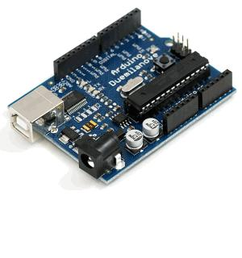
For JeeNodes, a powerfull wireless solution
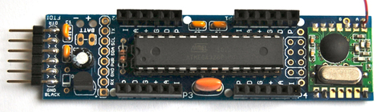
What is an Arduino ?
Arduino is a tiny computer dedicated to electronic prototyping.
It has inputs and outputs, enabling you to receive or send
- ON/OFF signals: buttons, contacts, LED's, relays…
- analog signals (potentiometers, photo-resistors, pressure or temperature sensors, motors, etc…). Reception is analog, emission is done in PWM (Pulse Width Modulation).
You can :
- upload an arduino program you will write, called a sketch. These sketches are kind of scripts in C language.
- communicate with computer thru the usb port
- receive data specific to your use
- remote control electronic and electrical installations
You can also let it run in standalone mode with its own programming without the use of a computer.
It is an open-source project with a very active community.
The hardware is cheap, and will please anyone wanting to construct his own physical interface, a multimedia installation, or give a re-birth to the old analog lighting board in 0-10V. An Arduino card costs between 25 and 30 euros (about 45$US). Some discovery kits are offered by certain shops, with steppers, potentiometers, resistors and an experimentation base plate (called a breadboard). There are many arduino compatible devices, all working with arduino software and libraries.
For users that are coding there are also multi-plexers, enabling more outputs on the arduino than in PWM: http://www.arduino.cc/playground/Learning/TLC5940.
How does it works ?
This little computer is based on ATMEL 328 pic and embeds its own bootloader, which includes everything needed to interpret the sketch you will upload in it.
Its frequency is generally 16Mhz. This is a little computer, but it may already compute enough instructions to make things interesting.
To interface with it, you need to program it, with an IDE (Integrated Development Environment) which allows you to write and upload sketches to it.
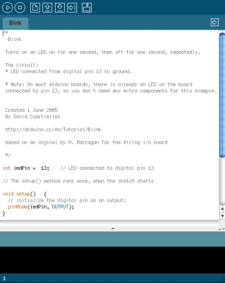
- Or you can learn its language (based on the C language)
- Or you can load in the sketch furnished in the folder whitecat/ressources/arduino/, to communicate with it from White Cat. This sketch enables you to receive data from Arduino, and write to its outputs.
Arduino project: http://www.arduino.cc
White Cat and Arduino : how to use it
Depending on your project, and the amount of complexity to do it, Arduino may be connected directly to White Cat in one of two ways:
- with a USB cable
- over the Network, in Art-Net.
Arduino is such a very versatile tool with limitless possibilities.
Using Arduino will vary depending of the user, and his project.
Art-Net approach
Art-Net approach is certainly the simplest approach.
You will use the Art-Net scripts furnished in the ressources/arduino folder.
To use it, you will need an arduino card with an ethernet shield. This costs around 100 euros.
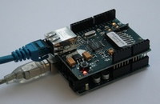
As an alternative, the Ethernet arduino cards (ethernet socket is directly build in the arduino) are really cheaper (about 50 euros a card). But they will need a USB-TTL adaptor to programm the processor from your PC:
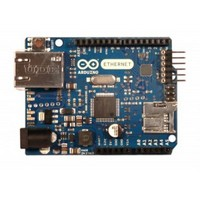
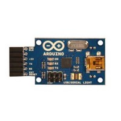
Wifi-shield enables you also to work over the network, wirelessly:
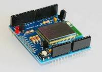
Art-Net Output (sending) enables you to send DMX Art-Net from the arduino:
- You have to read the analogic entry, and IO buttons in the Art-Net script and write states on the DMX buffer of the arduino. So you need to modify a little bit the script, to make it answer to your needs.
- You will receive the dmx inside a fader of White Cat.
- Or you use raw data, playing with channels, or you decide to use the channels sent by the arduino to remotely control certain functions, thru the Channel Macros (Follow, Bang, etc)
Art-Net Input (receiving) enables you to receive an Art-Net Dmx signal sent from White Cat:
- Up to you in the script to associate channels to PWM, or I/O ON/Off.
- This script enables a very quick remoting of relays, leds, motors, …. in Art-Net, without the need of expensive DMX → analogic transcoders.
All scripts are working fine with software arduino 023.
USB approach
If your arduino will be in the control room, near your computer, or you have chosen to work with JeeNodes, you will be using the USB approach.
Data will be sent and received via USB cable, in serial communication. This communication is bi-directionnal.
Arduino CFG menu in White Cat is dedicated to this usage: talking to the arduino using USB.
Communication between White Cat and Arduino is done in several ways:
- Arduino remotely controls functions inside White Cat, working as an input box (faders, push buttons, buttons)
- White Cat sends digital output to the Arduino enabling it to do physical things in real world (On/OFF, PWM)
This setup also requires you to edit the script that you will upload in the Arduino .
Dialog between White Cat / Arduino
This dialog is done by sending a message with a header (“DO/”, “SD/”,….). The header will define its use, then a certain number of bytes are sent. The complete message is terminated by an end word (“ED/”, like End of Data). This communication is done 2 ways: White Cat to Arduino / Arduino to White Cat.
Depending on the Request Rate, White Cat will ask the Arduino to send it data:
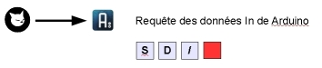
This is done by the “SD/” request (Send Data).Receiving this request, Arduino will send 2 messages, one concerning ON/OF states, the other giving states of Analogic inputs:
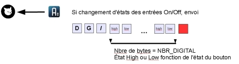
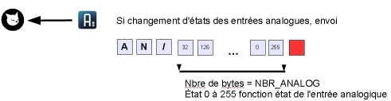
Finally, White Cat sends data to be written on Arduino Outputs, I/O and PWM:
if the channel or the fader remotely controlling the I/O changes state:
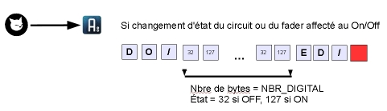
if the channel or the fader remotely controlling the PWM output changes state:
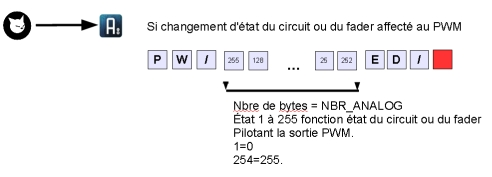
Install drivers for the Arduino
Arduino 2009 and previous
If you have already installed the VCOM driver of the Enttec PRO, you don't need to add anything. Communication is based also on the chipset FTDI, which simulates a serial port. This is the same technology underlying the ENTTEC open dmx cards, and some others dmx manufacturers. Otherwise, you should install drivers as specified on the arduino site :http://arduino.cc/en/Guide/Windows
Arduino UNO
In the Arduino software you have downloaded, there is a file named drivers. The UNO is not relying anymore on FTDI technology. This prevents troubles recognizing other FTDI based hardware, such as … Enttec dmx cards.
To install the driver:
- unzip the arduino software on your computer
- plug in the UNO
- right click the My Computer icon on your desktop
- Go to Properties > devices manager
- select UNO which is shown with a warning sign
- ask to search for the drivers manually
- go in the folder arduino 022 (or some other higher version/ drivers
- launch installation
Uploading the communication sketch with White Cat
Be aware that if your Enttec dmx interface box is plugued, it will be considered by IDE Arduino software as an Arduino card. It is recommended that you unplug your dmx interface while doing the upload.
- Install Arduino software:
- Download Arduino and unzip it (preference for C: or D: directory)
- Arduino 2009: Copy contents of WhiteCat/ressources/librairies and paste it inside Arduino/libraries. Those are additional code libraries you need to upload White Cat's sketch.
- UNO and above: you don't need to install Wstring anymore
* Plug in the Arduino on USB
- Select in your IDE (Arduino software) the good card and COM port:
- Tools > Board >
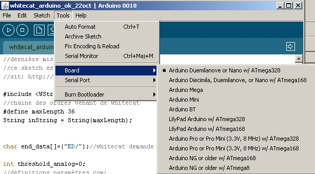
- Tools > Serial Port please take note of the COM port windows that have been assigned to the arduino.
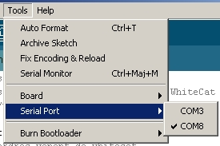
- Uploading the sketch:
- FILE
- OPEN
- browse WhiteCat/Ressources/Arduino
- select Arduino_classic_USB.pde.
- click the Upload icon on the upper right
This manipulation is necessary only once. If you need to change settings, you will edit the script, and upload it again in the arduino.
Understanding the sketch
Ok, this part is not easy so I ask for your patience as you learn about the tools you will use.
A sketch is a program, written in C language, with some specifics due to AVR (chip programming) and the Arduino eco system.
A sketch consists of two principal functions: setup() and loop().
Setup() initializes the hardware (especially I/O : which is output and which is input ).
Loop() is the function running continuously while the arduino is powered. It is the main structure of your program, where functions are called on events.
What is a function ?
A function is a set of instructions being declared between brackets like here:
void mafonction()
BRACKET
…
BRACKET
The bracket system enables you to define the beginning and end of the function body.
We are talking about syntax. When bugs are encountered by new users, it is usually a problem of brackets not in their right place, which creates false instructions.
Please note that in the arduino IDE, when your cursor is placed on an opening bracket, the ending bracket is highlighted to assist in the comprehension of the sketch and its structure.
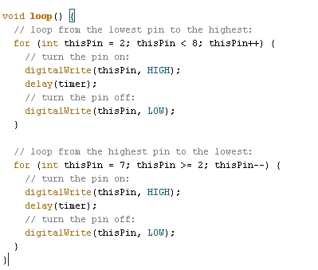
See arduino documentation for the syntax and most commonly used commands.
Comments in the code: double slash or slash star are used to make comments. They will not be compiled and enable you to write your comments: when you come back to a sketch 2 months or one year after, you will be very pleased to read comments explaining what is doing what and why.
Global Description of the sketch White Cat to arduino
This script contains 4 parts. You will only modify certain things in part 1 and 2.
Part 1:
Declaration of the included libraries (code libraries) necessary for the execution of the sketch (#include <Wstring.h>)
Declaration of global variables (data being accessible from any part of the program, not being restricted only to one function). It is in this part you will have to change certain values depending on what use you have in mind for the arduino.
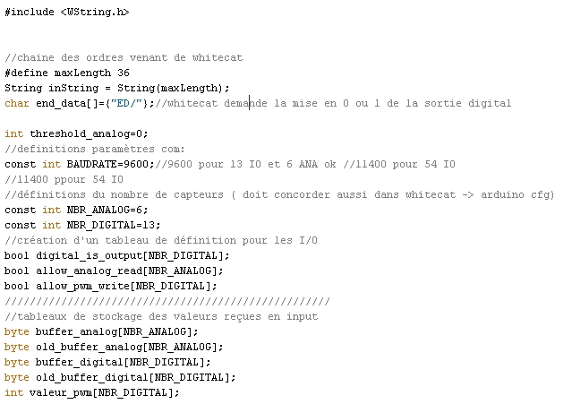
Part 2:
Setup function which makes the initialization of what is an input and what is an output. This is where you will modify things the most.
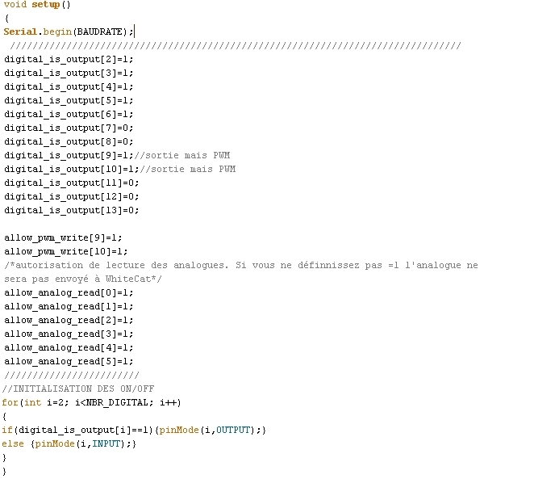
Part 3:
Loop function, waiting input from serial port and redistributing the entry to the function read_order().
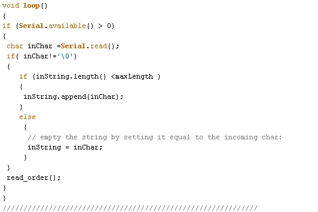
Part 4:
Functions doing the job in whitecat_to_arduino: Function read_order() is sending keywords related to other functions:
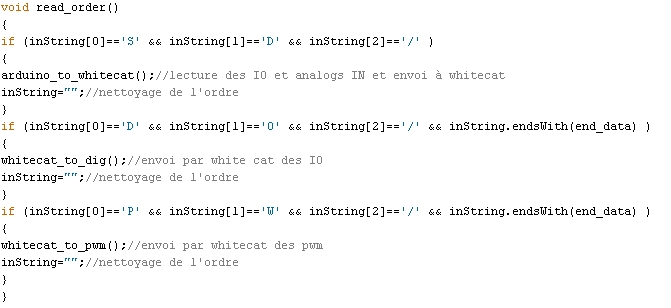
function writing on digital output: whitecat_to_dig() and whitecat_to_pwm()
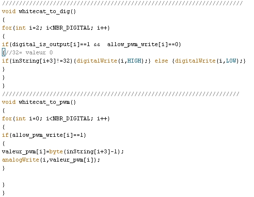
functions reading arduino ports and sending data to White Cat: arduino_to_whitecat()
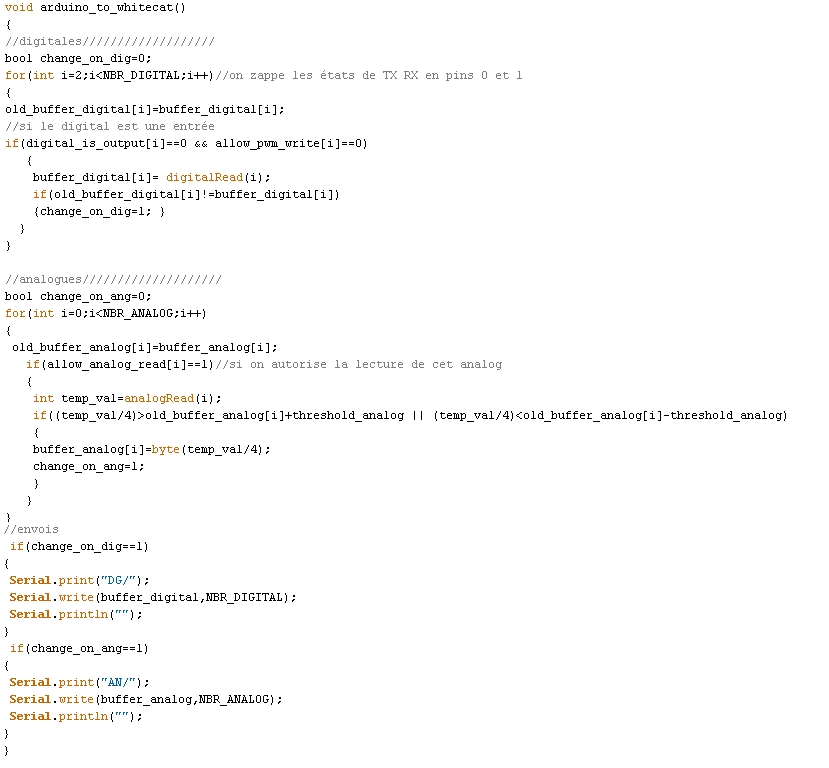
So now what? (definition of your needs)
First you need to define your use of the arduino:
- how many on-off in input, and which ones
- how many on-off in output, and which ones
- how many analog outputs in PWM, and which ones
- how many analog entries, and which ones
Once this is done, you can modify the script to suit your needs: It is helpful to do a little drawing to have a global vision of what the overall project is.
Before customizing the sketch, save it under another name, so as to preserve the original working script untouched as a prototype for use with the next sketch.
*While editing the sketch, take care not to destroy any brackets or punctuation, especially the ; *
This kind of small error will make it impossible to compile and load your script. Verify the syntax by doing Sketch>Verify/Compile.
Part 1:
Edit BAUDRATE, threshold_analog, NB_DIGITAL and NBR_ANALOG
BAUDRATE.
Baudrate: speed of communication between White Cat and Arduino verify that the BAUDRATE set in White Cat matches that of your sketch. Normally a 9600 baudrate is ok.
threshold_analog
If you don't physically filter with a capacitor and a resistor the signal coming from an analog input, it will fluctuate continuously. This adjustment allows you to even out the changes.
int threshold_analog=0; set it to 1 or 2 max
This solution reduces the sensitivity of the analog values. If you set it to 1, you will have a sensitivity similar to midi (0-127). If you set it at 2 it will be twice less sensitive (0-63 range). So we will prefer to attenuate those variations physically (see diagrams at the end of this wiki page).
NBR_ANALOG
NBR_ANALOG: maximum analog entries you will use on the arduino.
If you use only 3 sliders with the arduino, you will set NBR_ANALOG=3; Reading will be done until analog input 2 (pins 0-1-2 are the 3 inputs). If you use the 6 inputs, reading of the code will be done until analog input 5 (0-1-2-3-4-5 → 6 pins)
NBR_DIGITAL
NBR_DIGITAL: maximum digital IO you will use on the arduino.
For example with the Mega there are up to 54 inputs without multiplexor, with the UNO 13. If you set it to 8, execution of the code (reading On/Off , writing On/Off and PWM) will be done until 7 (0-1-2-3-4-5-6-7 = 8 pins).
Part 2: setup() function
Initialization is done on 3 separate arrays, that will be edited with 0 or 1. Arrays are digital_is_output[], allow_pwm_write[] and allow_analog_read[].
If you look at the arduino card, you will see that inputs and outputs are named from number 0. This number gives you the identifier of the array to edit.
- digital_is_output[4] is digital IO pin 4
- allow_analog_read[2] is analog pin 2 .
Initialization of ON/OFF and pwm.
Input/outputs On/Off are quite peculiar, and can be confusing in the beginning.
Pins 0 and 1 are reserved for use between hardware devices. We will avoid using them. They will show the presence of input and output data if you plug an LED into them. White Cat avoids using them as does the sketch.
You can set up a digital pin to be either IN or OUT.
For the OUT type, it can be of two kinds: ON/OFF, or PWM (dimming on pulse width modulation).
So you need to edit
- digital_is_output[pin number]= 0; if it's an input
- digital_is_output[pin number]= 1; if it's an output (On/Off or PWM)
Certain pins, indicated PWM or * allows a PWM output. To configure them to the PWM type (enabling them to vary from 0 to 255), you will edit:
- allow_pwm_write[pin number]=0; the output is just On/Off
- allow_pwm_write[pin number]=1; if PWM is activated the output will not be On/Off
Remember that if maximum NBR_DIGITAL is set to 9 , you will never have access to pins 10 11 12 13. 9 max allows pins 0 1 2 3 4 5 6 7 and 8.
Enabling the reading of analog pins:
Reading analog pins is defined in this array, by setting to 1 each pin.
- allow_analog_read[2]=1; pin analog 2 is activated for analog input
Remember if NBR_ANALOG is defined as 3, you will never have access to pins 3 4 5. You will have only : 0 1 and 2.
Loading sketch in the arduino
Click the arrow in the icons.
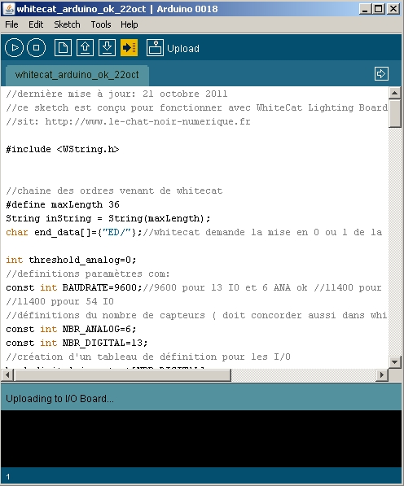
If any syntax errors appear, or communication errors with the arduino, the debugger will show the data in red:
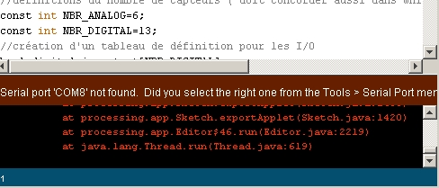
Communication problems are usually because the wrong type of card (> Tools > Board) and/or the wrong COM PORT ( > Tools > Serial Port ) is chosen.
Monitor feedback
You can monitor the serial transmission by activating the monitor (the sort of television icon).
Arduino CFG
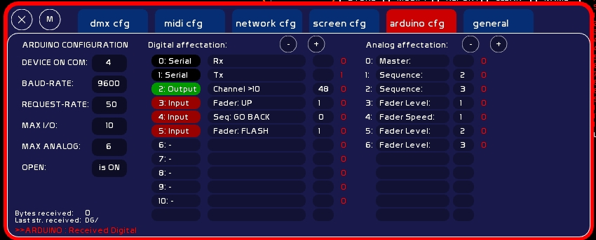
Communication Configuration in White Cat
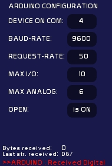
PORT COM
The COM PORT (virtual serial port) of the arduino, that you have taken from the arduino IDE (Tools > Serial Port) or from the device manager.
- Type COM number (aka 4)
- click its box
White Cat will try to connect to it.
BAUD-RATE
Bauds per second rate. By default it is set at 9600 bauds.
If you are using cards with more inputs than the UNO, you may need to augment the rate
If you want more than 13 IO's and 6 analogs, by playing with a Méga (54 IO's & 14 analogs), you will have to set a faster (bigger) rate .
The rate must match both in White Cat and in the Arduino setup function.
You should calculate the rate like this: in the communication, we transmit characters (value 0-255) to Arduino, and vice-versa. Each characters requires 10 bits (1 start, 8 bits, 1 stop)
So you must take the maximum data value, for example with mega, 54 bytes.
Add 3 bytes which will be the header of the message, plus 1 byte to close: (3+54+1)*10 (bits per byte)*number of complete message packets per seconds.
If you want to refresh data in a fluid manner, at the 50th of a second: (3+54+1)*10*50= 29,000 bauds minimum. So we will choose a baud-rate at a value divisible by 8: 32,000.
To change the baud rate:
in White Cat:
- type the value
- click baudrate value. Connection with arduino will be reinitialized.
in the Arduino:
- in IDE d'Arduino, edit the sketch: change value in const int BAUDRATE=96000;
- reload the sketch in White Cat, close the IDE and launch White Cat
REQUEST-RATE
It is the refreshment value for incoming/outgoing data between White Cat and Arduino.
The process is done in this way:
- White Cat sends the keyword “SD/” (Send Data) to Arduino each “X”ths of a second as you have defined.
- At reception of this request, the Arduino will directly send data.
- Then White Cat will send values to write on the outputs to the arduino.
- Serial buffer is then cleared (flushed) inside Arduino and White Cat.
White Cat is sending a data packet each “x”/1000th of a second: 50 = 50 x 1/1000 of second, 100 = 100 x 1/1000 of second. The lower the value, the faster the data transmission.
MAX I/O
Its maximum I/O (digital) depends on the pins of your card. Please do not put a higher number than the physical possibilities allowed by the arduino.
On Duemilanove there are 14 digital input/output pins.
First two are reserved for hardware communication (serial port). They are not editable. You can put LED's on them to monitor the communication more clearly (0 = RX and 1 = TX ).
You can use I/O's:
- as inputs (push buttons, buttons).
- as outputs: LED's, relays, etc.
Be careful of power limitations: there is 20 mA per pin (please verify specification of your arduino documentation). This is enough for an LED, but in cases where you need more power you will need to use a MOSFET to prevent destroying your card.
- or as a dimmable output, using PWM (PWM: pulse width modulation):
Of the 12 remaining pins, 6 may be directly used in PWM. I/O of the pin will be more or less driven by the micro processor.
You will need an L293 to remotely control servos and stepper motors. See arduino site for diagrams and docs. PWM sends a value from 0 to 255.
Attention: Arduino may be used as an input device using only the USB power of your computer. But if your are demanding a quantity of output power from the card, you will need to supply it with 9v. The arduino is built to work with USB plugged AND an external power source.
MAX ANALOG
Maximum number of analog inputs on the card. These may receive any sensor: gyroscopes, knobs, photovoltaics sensors, etc….
Here again, do not exceed the physical number of inputs of your board
OPEN
State of the arduino board, closing/reopening is done by clicking there.
Digital Assignements in White Cat
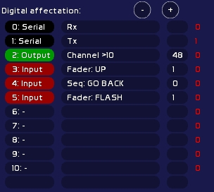
First two pins are not editable.
When you click on a pin number you change its type:
- Input: this pin receives On/Off
- Output: this pin outputs On/Off
- PWM: this pin remote controls things on a range signal of 0 to 255, in PWM
The second row is the action to execute in White Cat.
The third row is the parameter of this action:
- type a value
- click parameter number
INPUT
In red color: I/O input.
Faders:
| Command | Value | Description |
|---|---|---|
| Fader:UP | 1-48 | button of LFO UP |
| Fader:DOWN | 1-48 | button of LFO DOW |
| Fader:SAW | 1-48 | button of LFO SAW |
| Fader:ToPREVDock | 1-48 | to previous dock in loop |
| Fader:ToNEXTDock | 1-48 | to next dock in loop |
| Fader:Up/Down | 1-48 | go backwards |
| Fader:LOCK | 1-48 | button of LOCK |
| Fader:FLASH | 1-48 | button of FLASH |
| Fader:All at 0 | 1-48 | Level, Speed Loops and LFOs at 0 |
| Fader:L/Unloop dock | 1-48 | Loop or Unloop a dock |
| Fader:L/Unloop all | 1-48 | Loop or Unloop all dock |
CueList:
| Command | Value | Description |
|---|---|---|
| Seq: GO | - | GO |
| Seq: GO BACK | - | GO BACK |
| Seq: JUMP | - | JUMP |
| Seq: SHIFT-W | - | One memory back in preset |
| Seq: SHIFT-X | - | One memory forward in preset |
| BANG ! | num banger | Send banger Val1 |
Midi:
If you have already assigned in midi a command, and that this command is not listed in arduino I/O actions, you may cheat with this menu.
| Command | Value | Description |
|---|---|---|
| As Key-On CH0 Pitch: | 0-127 | CH Midi 0: Key-On 127, released= Key-Off |
| As Key-On CH1 Pitch: | 0-127 | CH Midi 1: … |
..
| As Key-On CH15 Pitch: | 0-127 | CH Midi 15: Key-On 127, released= Key-Off |
OUTPUT
- Channel > 10
State of output (on/Off) depends on the highest value of the channel either in Faders or in CueList. This channel value is not affected by the GrandMaster, nor by the patch. If the channel > 10, state written to the pin on the Arduino is ON. If the channel < = 10, state written to the pin on the Arduino is OFF.
Parameter is channel number (1 to 512).
- Fader > 10
Same thing but on a Fader state. Nothing to do with channels inside the docks.
Parameter is a fader nummber (1 to 48).
Be aware:
Data sent from White Cat to the arduino depends on the channel state changing in White Cat.
For example, if you set a channel to On/Off mode, White Cat will compare the current state to the new state before reading in the new state.
Sending to arduino will be done only if there is a difference: if the channel was previously at 11% and now is at 15%, this will not change anything as its state in both cases is > 10.
Opening White Cat, refreshment is not done. If my channel is at 11%, nothing happens. why ?
This is done for several reasons:
- avoiding buffer overload
- avoiding on opening of White Cat the triggering of electro-magnets if you are not on the correct memory. (if arduino is opened automatically in [General CFG] (On Open))
PWM
Same principle. PWM are following Channel state or fader states, in full dmx range ( 0-255).
Analog assignments
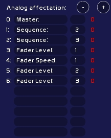
This table is less complicated, as there is only one type of analog data received. Digitals were quite confusing between Input Outputs and PWM 
| Command | Value | Description |
|---|---|---|
| Fader Level: | 1-48 | - |
| Fader Speed: | 1-48 | Accelerometer |
| Master: | - | Grandmaster |
| Sequence: | 1-3 | CueList: Stage fader (1) , Preset fader(2), Cross-fade speed (3) |
As for digital input, you may cheat also by generating midi in White Cat:
| Command | Value | Description |
|---|---|---|
| As CC CH0 Pitch; | 1-127 | CH Midi 0 |
| As CC CH1 Pitch; | 1-127 | CH Midi 1 |
….
| As CC CH15 Pitch; | 1-127 | CH Midi 15 |
Shopping & Arduino
Here are some interresing links, as some arduino shops are selling interesting beginners kits and other things that may interest us in the theatre or dance field. In Paris, Saint Quentin Radio is a good place and they offer good advice.
- Lextronic, french, offers a good starter kit (arduino board, relays, servos, driver) http://www.lextronic.fr/produit.php?id=19085.
- Fritzing, a free software project enabling you to create plans for PCB and electronic schemes, have also an interesting starter kit. http://fritzing.org/shop/starter-kit/.
- CoolComponents, is offering many interesting things and especially the LillyPad (a washable arduino you may fix in the costumes)http://www.coolcomponents.co.uk/catalog/and the screw shield.
- Sparkfun is also a reference for our American friends http://www.sparkfun.com
Wireless solutions
In addition to usb and ethernet, you may need to talk with the arduino wirelessly.
- Recommended solution is Jeenodes from JeeLabs, a fully arduino compatible, based on RF12 (audio emission-reception).
Jacques Bouault and Anton Langhoff have worked out this elegant solution for les Nuits Blanches (Paris, 2011). Hardware and HF connexion with White Cat (outside conditions, control laptop moving with the audience in the streets) were extremly secure and stable. JeeNodes also has the good point to be completely affordable.
A JeeLink plugged to your computer will be recognized as arduino by White Cat. It will be the emitter (you could use also a JeeNode + USB BUB but JeeLink has already got a plastic case).
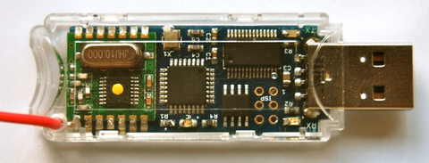
One or more JeeNodes will receive or send data (4 IO/4 PWM, or up to 8 PWM).
The USB-BUB is very usefull to load a sketch directly in the ATMEGA of the JeeNode. With it you can plug the JeeNode simply on the PC. Otherwise, you need to take the ATMEGA itself, put it on an ARDUINO, load a sketch, then get it back to the JeeNode.
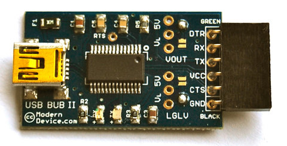
In the folder ressources/arduino you can find scripts to load in the emitter (JeeLink) and receivers (JeeNodes), enabling you to receive directly data without modifying anything in the code, or writting data to the JeeNode (dimmers, motors, steppers, relays).
Quote:
- Xbee shields, enabling two arduinos to talk together without any coding thing, but very high cost in front of the JeeNodes
- wifi shield to set the arduino on a wifi network
Basic diagrams for your first attempts
www.arduino.cc is really nicely done and there are many examples. You will find a lot of things in Learning and Playgrund sections.
Here some drawings (produced with Fritzing software).
First steps on the arduino are generally done with a few LEDs, faders, buttons and resistors.
It enables you to test communication with White Cat and discover a brand new world.
Input: basic shunt on digital ON/OFF pin
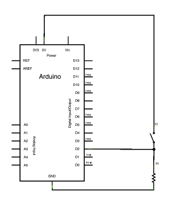
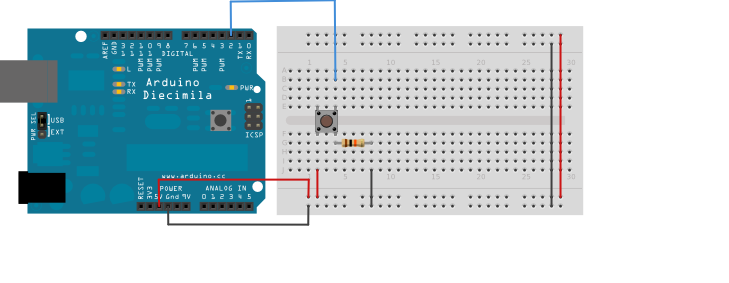
Input: slider on analog input
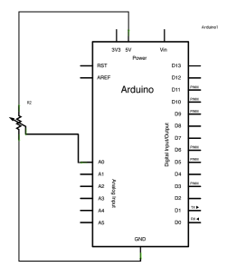
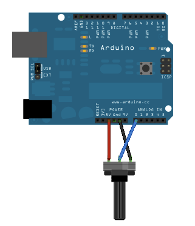
With the capacitor to smooth the entry physically (vary resistors and capacitors until you get the proper result)
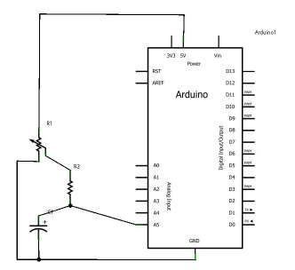
Input: IR distance sensor
Diming your light over IR sensor
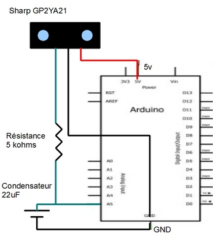
Output ON/OFF : DEL
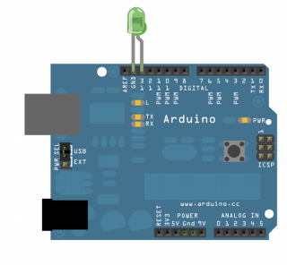
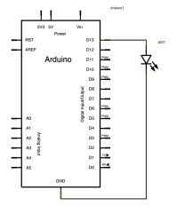
Output PWM: DEL dimmable
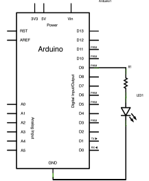
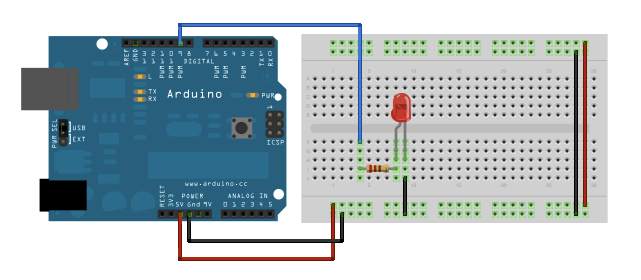
12v DC Dimmer remoted by RF Jeenode
Research and components: Jacques Bouault.
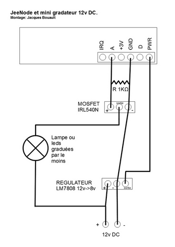